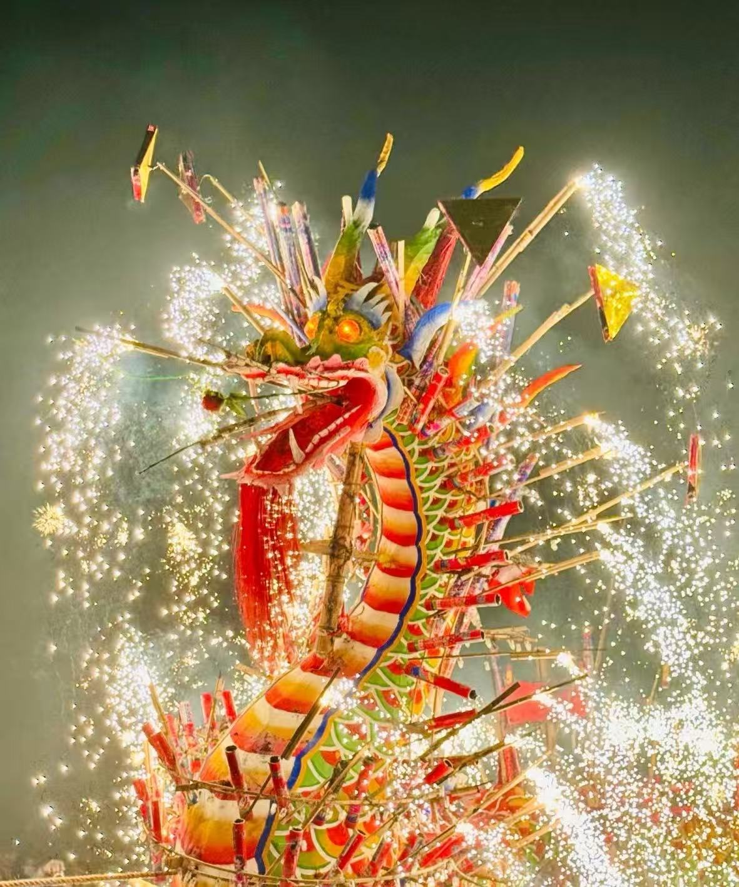
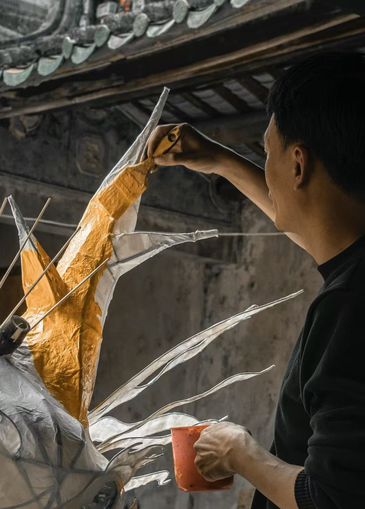
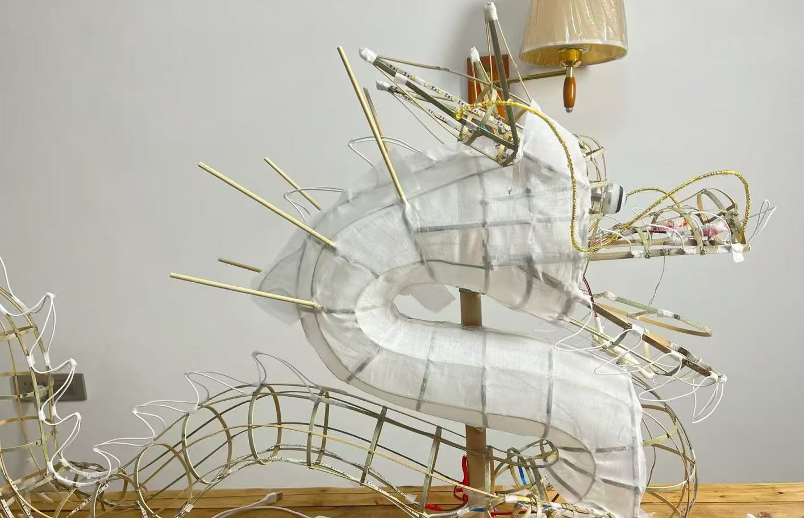

浦寨火龙

浦寨火龙（又称浦寨烧龙）是广西壮族自治区凭祥市浦寨村独有的传统民俗舞龙，也是当地极具代表性的非物质文化遗产项目，被誉为 “南疆火龙奇观”。整条龙以竹篾为骨、麻布为身、彩纸为鳞，龙身通体为红色，舞动时搭配烟花、火盆等烟火元素，在烈焰与星光中翻腾跳跃，金蛇狂舞，是少有的以 “火” 为核心特色的舞龙项目，场面惊险热烈，极具视觉冲击力。
制作工艺
浦寨火龙的制作与表演工艺，是集扎制、彩绘、烟火编排于一体的综合性技艺：
骨架扎制：以韧性竹篾为原料，扎制龙头、龙身、龙尾的框架，龙头造型威猛，龙角、龙须、龙眼等细节都精心刻画，确保舞动时稳固灵活。
龙身制作：以麻布或厚布包裹骨架，用彩纸、金箔等材料制作龙鳞、龙鳍，绘制火焰、祥云等吉祥图案，色彩以红、金为主，寓意红火兴旺。
烟火适配：根据舞龙阵式，提前规划烟花喷射点与火盆摆放位置，制作专用的烟火喷射装置，确保表演时火焰与龙身的节奏配合默契，又兼顾安全。
阵式编排：舞龙时搭配 “火龙出海”“金龙盘柱”“火龙摆尾” 等经典阵式，表演者赤膊上阵，在烟花火雨中穿梭舞动，展现出野性而热烈的生命力。


龙灯历史
浦寨火龙的传承扎根于南疆边境的民俗信仰，有着独特的发展脉络：
起源期（明清）：浦寨火龙起源于明清时期，最初是边境村民为祭祀火神、祈求平安兴旺而举办的民俗活动，距今已有数百年历史。
成熟期（近现代）：随着边境贸易的发展，火龙表演逐渐融合了壮族、汉族的民俗文化元素，表演形式愈发成熟，成为当地春节、重大节庆期间的标志性活动。
复兴期（当代）：近年来，浦寨火龙被列入当地非物质文化遗产保护项目，通过抢救性记录与传承，这一古老民俗得以重焕光彩，成为凭祥市极具代表性的文化名片。
文化传承
浦寨火龙早已超越了 “舞龙” 本身，成为南疆边境文化与精神的载体：
边境文化的融合符号：浦寨地处中越边境，火龙文化融合了壮族、汉族以及边境地区的民俗信仰，是多民族文化交融的生动体现。
红火兴旺的精神寄托：火龙以烈焰为魂，寄托了百姓对风调雨顺、国泰民安、生活红火的祈愿，也象征着南疆人民热情、勇敢、坚韧的精神特质。
活态传承的民俗名片：如今，浦寨火龙不仅在本地节庆展演，还走出边境，在各类民俗文化节上亮相，让更多人了解这一独特的南疆民俗，让千年火龙在新时代继续燃烧。